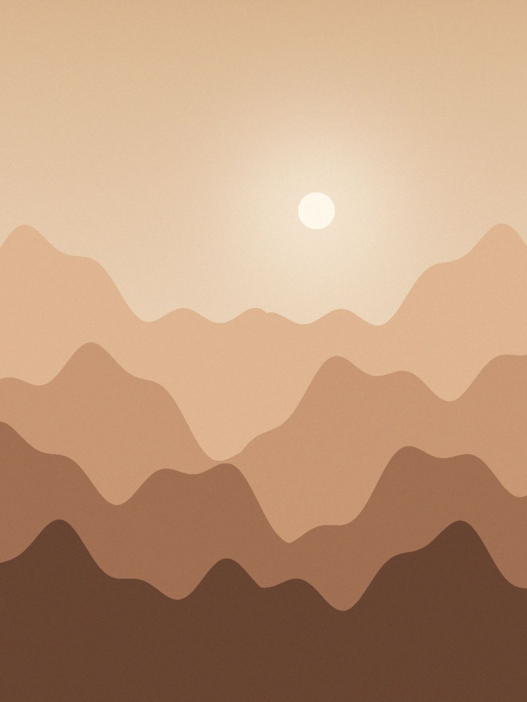
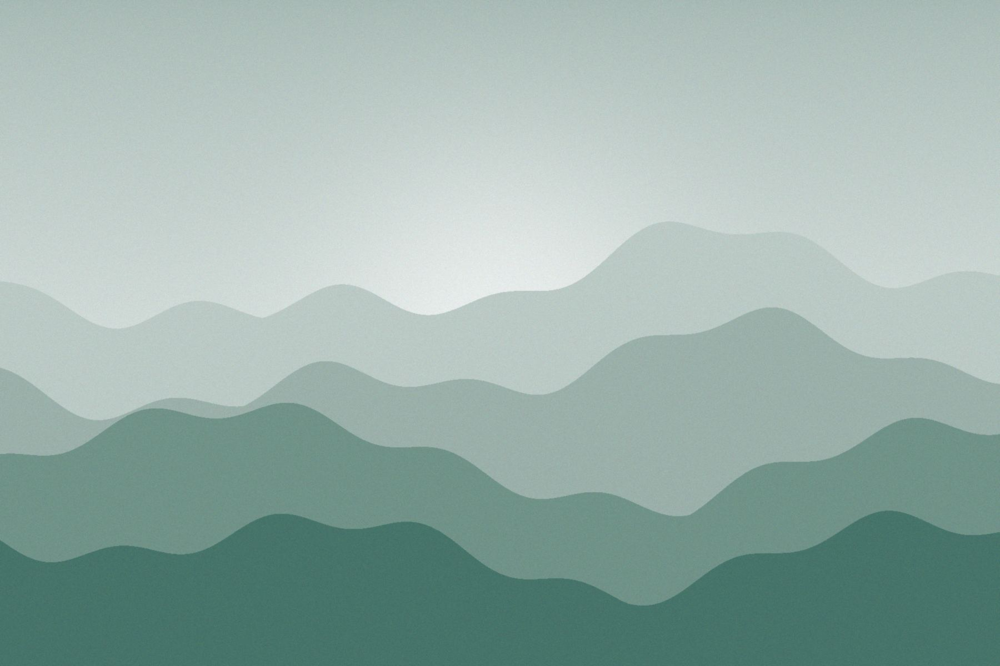

Freie Fotografin
Selbstständig · [Ort]
[Schwerpunkte, Kunden, Veröffentlichungen.]
Fotografin · Reisebloggerin
[Ein Satz über dich und deine Fotografie – z. B. „Ich fotografiere Orte, wie sie sich anfühlen.“]
Portfolio ansehen Lebenslauf![[Bildbeschreibung]](bilder/hero.jpg)
![[Bildbeschreibung]](bilder/foto-02.jpg)
![[Bildbeschreibung]](bilder/foto-03.jpg)

Über mich
[Ein persönlicher Einstieg: Wie bist du zur Fotografie gekommen? Was bedeutet dir das Reisen?]
[Dein Schwerpunkt und was deine Bilder ausmacht – zwei, drei Sätze.]
Portfolio
![[Bildbeschreibung]](bilder/foto-01.jpg) 01A02A03A
01A02A03A![[Bildbeschreibung]](bilder/foto-05.jpg) 04A
04A
06A
07A![[Bildbeschreibung]](bilder/foto-04.jpg) 08A09A10A
08A09A10ABild anklicken zum Vergrößern ↗
Lebenslauf
Selbstständig · [Ort]
[Schwerpunkte, Kunden, Veröffentlichungen.]
Augenliebe Reiseblog
Reportagen, Fotografie, Social Media.
[Unternehmen] · [Ort]
[Kurzbeschreibung.]
[Veranstalter]
[Hochschule] · [Ort]
[Schwerpunkt.]
Kenntnisse
Mehr von mir
Kontakt
Schreib mir!
Für Fotoaufträge, Kooperationen, Bildlizenzen oder einen Austausch über das nächste Reiseziel.
kontakt@stephanie-glaeser.de